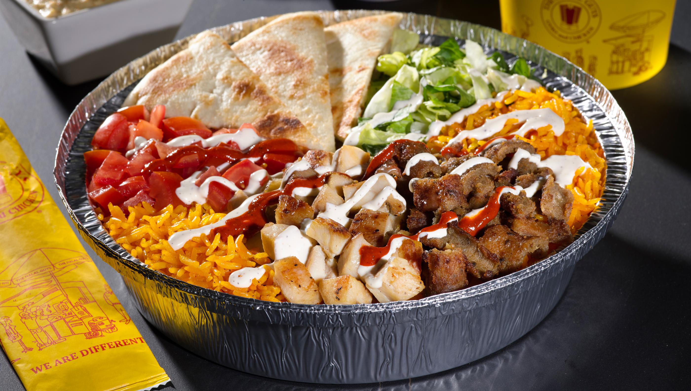

LE MEILLEUR CHEAT MEAL POUR SEULEMENT 10CHF

The most filling meal with meat, rice, fresh vegetables and saaauuuuuce.
Not effort to make and freaking delicious!
Ingredients
- The biggest durum for the lowest price you can find
- Freshly cooked rice
- Get the white sauce from the restaurant you ordered
- Potatoes
- AND LAST BUT NOT LEAST, TABASCOO
Steps
- Cut some Potatoes fries style
- Grill them with somes spices and oil
- Grab your Durum and desconstruct it
- Pick the vegetables and put them them in your fridge
- Toast your Lamahjun
- Microwave the meat
- Get all the ingredients and ASSEMBLE!
Assembly
- Une couche de frite pour commencer
- The warm rice on top will make your fries melting in your mouth
- Now for the stars of the show, put your delicious meat, again, on top
- For the freshness, a touch of vegetables
- The final touch, add all that delicious white sauce and tabasco to taste
- BONNE APPETIT SALE PORC